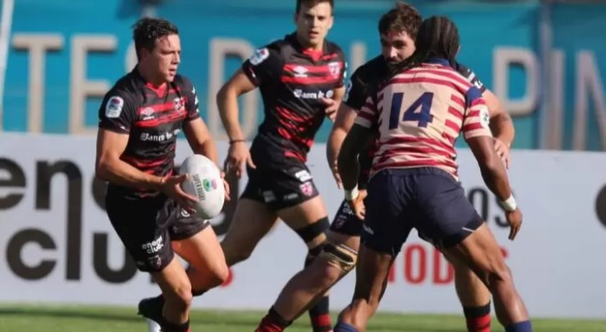

Con un chileno en el podio: en México se bajó el telón a la serie Red Bull Cerro Abajo
Deportes

La fiesta deportiva del descenso urbano, Red Bull Cerro Abajo terminó su recorrido por Latinoamérica este domingo luego de pasar por Valparaíso, Medellín y ahora en Guanajuato, una experiencia que tuvo a decenas de riders de todo el mundo bajando a toda velocidad en sus bicicletas en las pintorescas calles de cada uno de estos países. En la última parada en México, los competidores dieron el máximo de su rendimiento, pero nadie pudo igualar al colombiano Camilo Sánchez, quien logró un impresionante tiempo de 1:55.766 minutos, llevándose el primer lugar de la fecha. La carrera que constaba de 1.2 kilómetros de rampas, callejones y curvas cerradas; emocionó a miles de personas que llegaron a vivir la competencia que se realizaba por primera vez en este lugar.
El campeón domina: Enzo Montecinos se alza con victoria en la primera fecha del karting nacional
Deportes

El quíntuple campeón nacional de karting, Enzo Montecinos (21 años), se adjudicó la principal prueba de DD2 Seniors en la primera fecha del Campeonato Rotax Max Challenge 2023, llevada a cabo en el kartódromo de Melipilla en una intensa carrera a 13 giros en el circuito de 1.600 metros. El joven piloto largó desde la pole position y en ningún momento entregó la posición de privilegio, defendiendo con su talento y experiencia las arremetidas de su escolta Max Jaeger, quien llegó a solo 395 milésimas del vencedor. El crono de Montecinos fue de 15’44”048. Completó el podio Francisco Pérez, quien de lugares posteriores logró alcanzar con un buen rendimiento el tercer puesto.
Selknam aplasta a American Raptors y debuta con victoria en la Súper Rugby Americas
Deportes
Un sólido debut el equipo chileno Selknam en la Súper Rugby Americas, luego de aplastar a American Raptors de Estados Unidos en la primera jornada del certamen que agrupa a lo mejor de la disciplina a nivel continental. Los dirigidos por Nicolás Bruzzone no dejaron espacio a dudas y, con un 45-10, con punto bonus incluido, demostraron por qué fueron finalistas en la última edición de la Superliga Americana. Matías Garafulic y Joaquín Milesi fueron los más destacados en la franquicia nacional, aportando con varios trys cada uno que encaminaron la victoria chilena en el estadio Municipal de La Pintana. Ya en la mitad del partido la diferencia era 19-3, pero Selknam no bajó los brazos y siguió sumando anotaciones en el segundo tiempo. Milesi, elegido, MVP del partido, destacó que “esto es gracias a todo el equipo que tengo adelante. Es un buen inicio de temporada, pero falta mucho”. “Lo ideal es ganar el torneo y todo lo que se nos viene por delante. Es una temporada corta, pero muy dura”, agregó la figura de la franquicia chilena a las cámaras de ESPN. El próximo desafío del conjunto nacional en la SRA será ante Pampas XV de Argentina.